Contratti a termine: solo il 10% è stagionale, il resto è screening e sostituzione
Un dato ridimensiona la retorica sulla stagionalità: solo il 10% dei contratti a tempo determinato serve davvero a esigenze stagionali. L'80% è usato per testare candidati o coprir…

Dimissioni del padre dopo il congedo di paternità: esonero dal preavviso
Il padre che si dimette dopo il congedo di paternità ha diritto a non lavorare il periodo di preavviso? La Cassazione ha risposto applicando la norma anteriore al 2022, poi modific…

Licenziamento disciplinare e non contestazione dei fatti: la reintegra non è automatica
Una recente pronuncia della Corte d'Appello di Bologna torna sul rapporto tra difesa del lavoratore e reintegrazione nel licenziamento disciplinare. Il punto centrale: la mancata c…

Decoro architettonico in condominio: cos'è e come si tutela
Il decoro architettonico dell'edificio è un bene comune tutelato dal Codice civile. Chi altera la facciata con condizionatori, verande o tinte discordanti rischia l'obbligo di ripr…

Doppio lavoro: quando il datore può vietarlo
Molti lavoratori si chiedono se sia lecito svolgere un secondo impiego oltre a quello principale. La regola generale è la libertà: il datore di lavoro non può imporre divieti gener…

Interessi al 10,4% sui debiti non pagati: cosa cambia dopo la Cassazione
La Cassazione ha chiarito che gli interessi maggiorati previsti dall'art. 1284 del codice civile si applicano ai debiti non pagati oggetto di lite, a prescindere dalla loro origine…

Criticare il datore di lavoro: quando è diritto e quando è licenziamento
Il dipendente conserva la libertà di manifestare il proprio pensiero, anche critico, verso l'azienda. Ma quel diritto non è illimitato: superata una certa soglia, la critica può tr…
Modifica del regolamento di condominio: quando serve l'unanimità
La Cassazione (sez. II, sent. 23582/2023) torna a distinguere tra clausole regolamentari e clausole contrattuali del regolamento di condominio. Le prime si modificano a maggioranza…
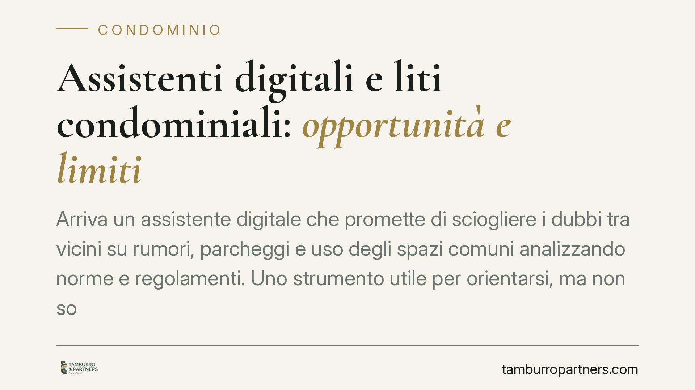
Assistenti digitali e liti condominiali: opportunità e limiti
Arriva un assistente digitale che promette di sciogliere i dubbi tra vicini su rumori, parcheggi e uso degli spazi comuni analizzando norme e regolamenti. Uno strumento utile per o…
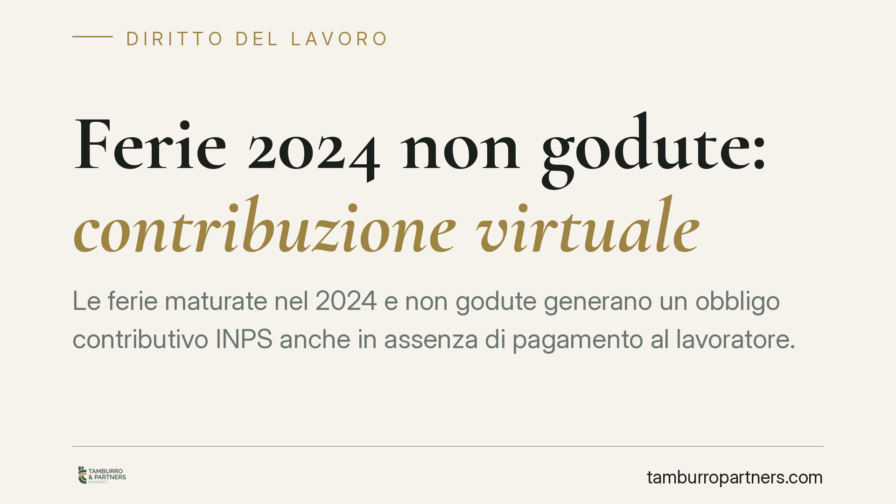
Contribuzione virtuale sulle ferie 2024 non godute: termini e versamenti
Le ferie maturate nel 2024 e non godute generano un obbligo contributivo INPS anche in assenza di pagamento al lavoratore. Il termine ordinario di fruizione è di 18 mesi dalla fine…
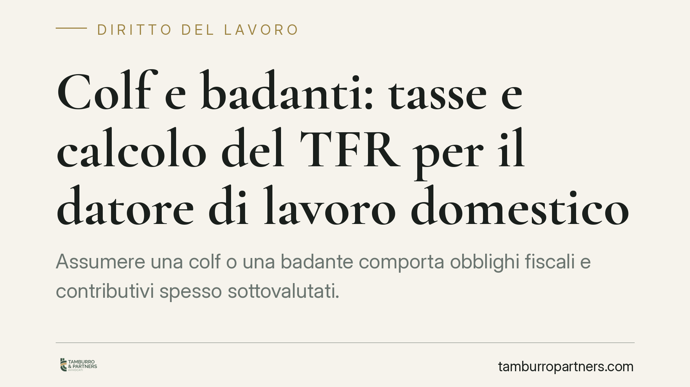
Colf e badanti: tasse e calcolo del TFR per il datore di lavoro domestico
Assumere una colf o una badante comporta obblighi fiscali e contributivi spesso sottovalutati. Il datore di lavoro domestico deve gestire la tassazione del reddito del collaborator…
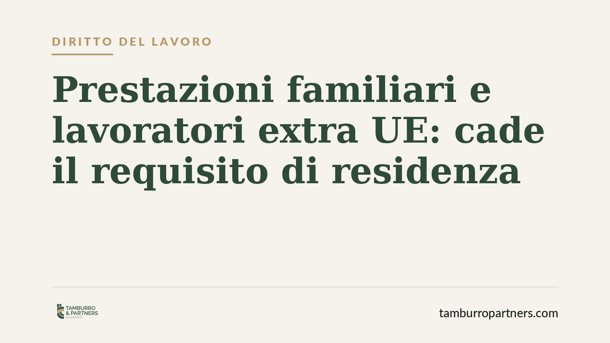
Prestazioni familiari e lavoratori extra UE: cade il requisito di residenza
La parità di trattamento imposta dal diritto dell'Unione incide sulle prestazioni familiari erogate dall'INPS. Per i lavoratori extra UE titolari di permesso unico di soggiorno-lav…
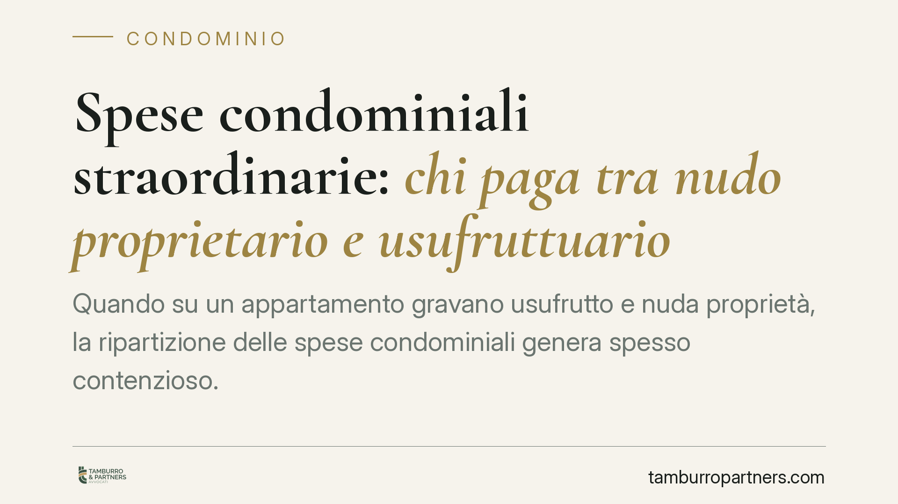
Spese condominiali straordinarie: chi paga tra nudo proprietario e usufruttuario
Quando su un appartamento gravano usufrutto e nuda proprietà, la ripartizione delle spese condominiali genera spesso contenzioso. Il Codice civile fissa un criterio chiaro: le spes…
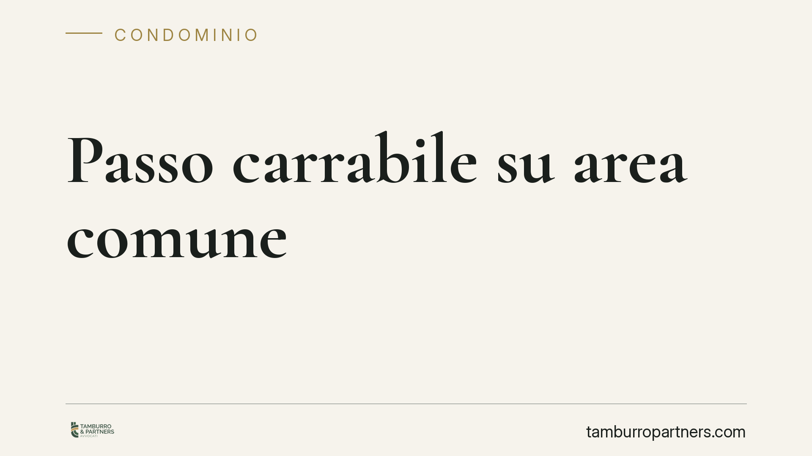
Passo carrabile su area condominiale: serve il via libera dell'assemblea
Aprire un passo carrabile su un cortile o un'area comune sembra una questione da risolvere con il Comune. Non è così. La Cassazione, con l'ordinanza n. 11870/2021, ha ribadito che …
Danni da calcinacci: senza prova precisa niente risarcimento
Una recente pronuncia di merito ribadisce un principio essenziale: chi lamenta danni da calcinacci deve dimostrare da quale porzione dell'edificio proviene il distacco. Senza quest…
Gruppo di società: chi è il vero datore di lavoro?
Nei gruppi societari il datore di lavoro formale può non coincidere con quello effettivo. La Cassazione riconosce, a certe condizioni, un unico centro di imputazione del rapporto: …
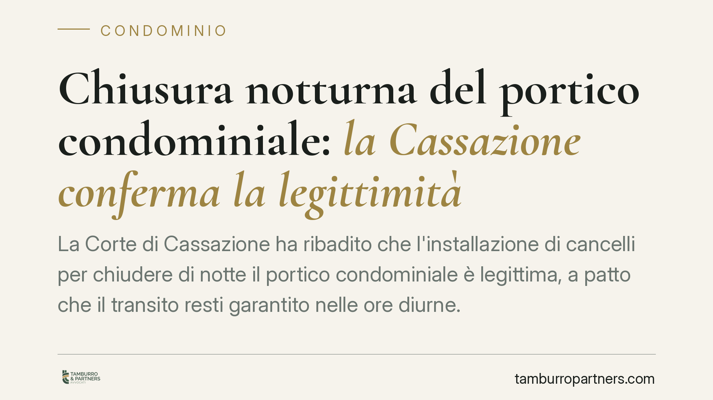
Chiusura notturna del portico condominiale: la Cassazione conferma la legittimità
La Corte di Cassazione ha ribadito che l'installazione di cancelli per chiudere di notte il portico condominiale è legittima, a patto che il transito resti garantito nelle ore diur…
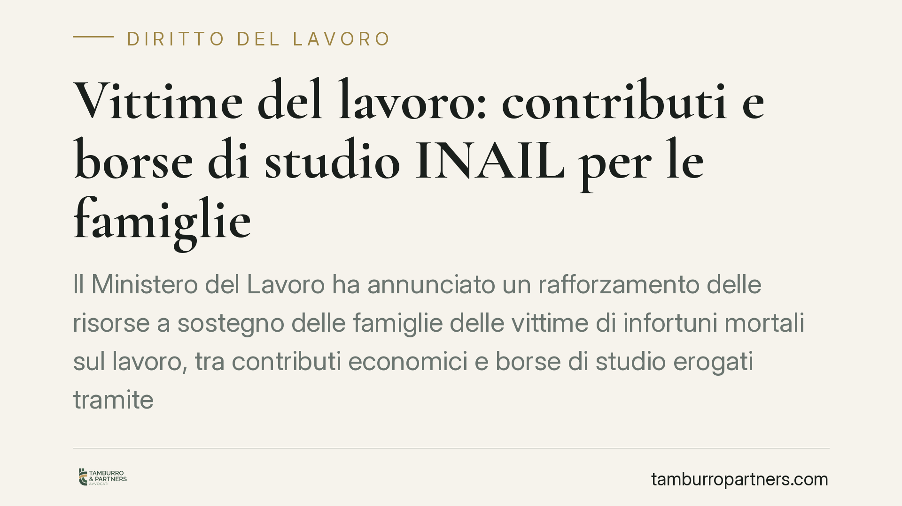
Vittime del lavoro: contributi e borse di studio INAIL per le famiglie
Il Ministero del Lavoro ha annunciato un rafforzamento delle risorse a sostegno delle famiglie delle vittime di infortuni mortali sul lavoro, tra contributi economici e borse di st…
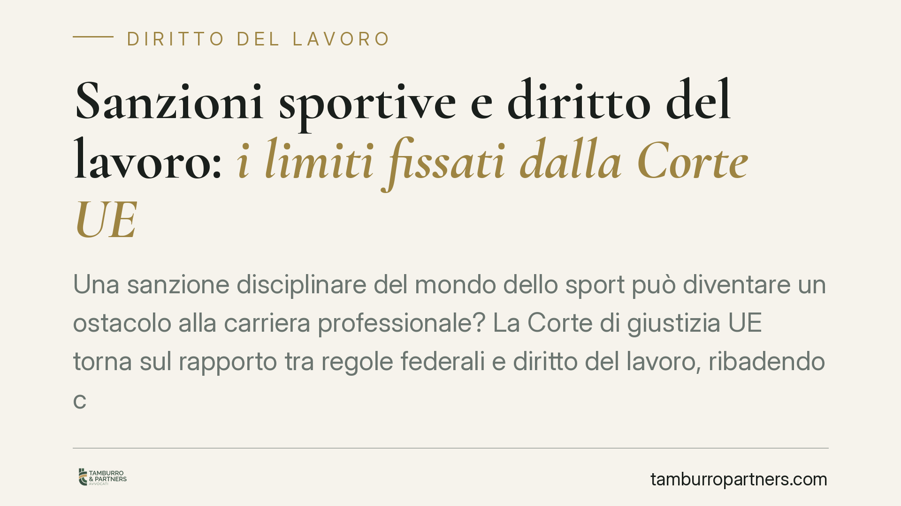
Sanzioni disciplinari sportive e diritto al lavoro: i limiti fissati dalla Corte UE
Una sanzione disciplinare del mondo dello sport può diventare un ostacolo alla carriera professionale? La Corte di giustizia UE torna sul rapporto tra regole federali e diritto del…
Fiscalità del Terzo settore: le indicazioni operative per gli ETS
Con l'attesa entrata in vigore del Titolo X del Codice del Terzo settore si avvicina la riforma della fiscalità per ETS, APS e ODV. La qualificazione fiscale dell'ente e il rapport…
Controllo del lavoratore in malattia: cosa può fare il datore
Un dipendente in malattia gode di tutele precise, ma il datore di lavoro non è del tutto privo di strumenti di verifica. Lo Statuto dei Lavoratori vieta il controllo diretto sulla …
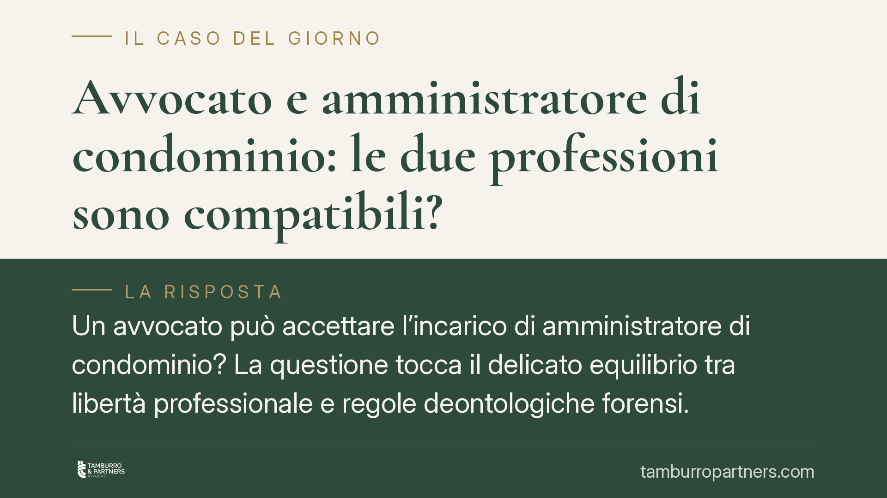
Avvocato e amministratore di condominio: le due professioni sono compatibili?
Un avvocato può accettare l'incarico di amministratore di condominio? La questione tocca il delicato equilibrio tra libertà professionale e regole deontologiche forensi. La rispost…
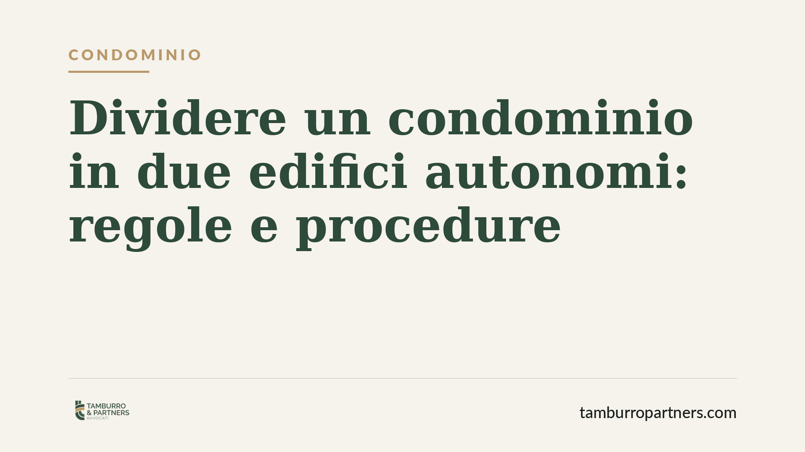
Dividere un condominio in due edifici autonomi: regole e procedure
Un condominio composto da più corpi di fabbrica può essere diviso in due condomìni separati e autonomi. La legge lo consente a precise condizioni: serve una struttura effettivament…
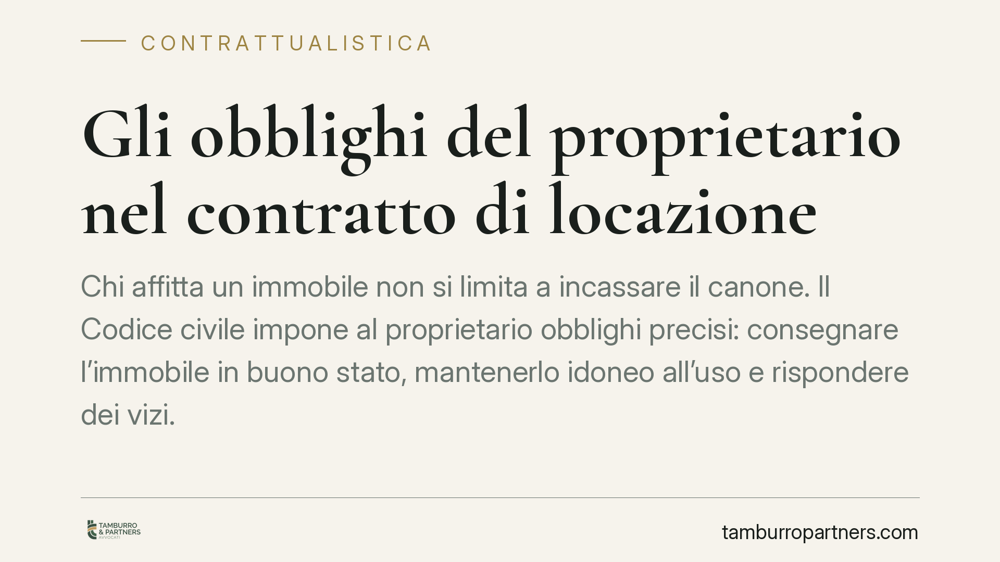
Gli obblighi del proprietario nel contratto di locazione
Chi affitta un immobile non si limita a incassare il canone. Il Codice civile impone al proprietario obblighi precisi: consegnare l'immobile in buono stato, mantenerlo idoneo all'u…
Infortunio sul lavoro: quando risponde il datore di lavoro
Il datore di lavoro risponde dell'infortunio del dipendente anche quando quest'ultimo ha tenuto una condotta imprudente. La responsabilità viene meno solo se il comportamento del l…
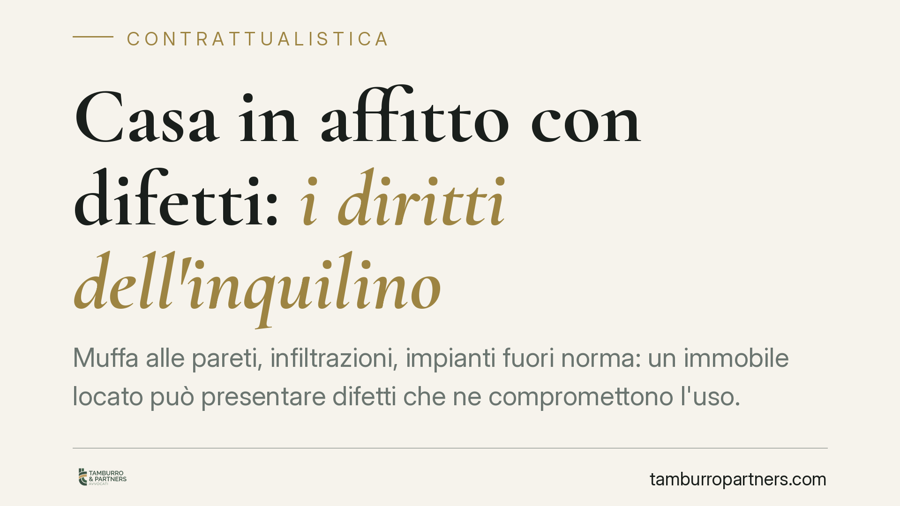
Casa in affitto con difetti: i diritti dell'inquilino
Muffa alle pareti, infiltrazioni, impianti fuori norma: un immobile locato può presentare difetti che ne compromettono l'uso. Il codice civile riconosce all'inquilino strumenti pre…
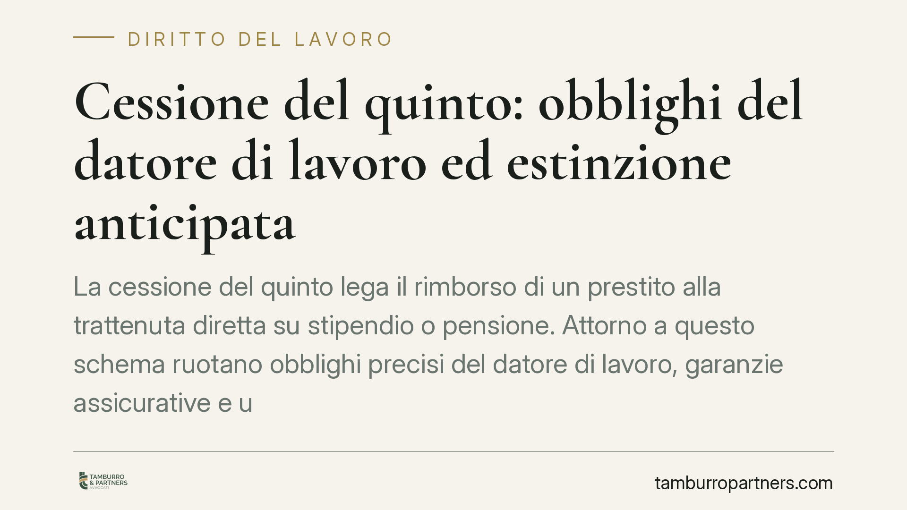
Cessione del quinto: il ruolo del datore di lavoro e l'estinzione anticipata
La cessione del quinto lega il rimborso di un prestito alla trattenuta diretta su stipendio o pensione. Attorno a questo schema ruotano obblighi precisi del datore di lavoro, garan…
Indennità di accompagnamento riconosciuta in ritardo e spese di lite
Ottenere il riconoscimento dell'indennità di accompagnamento non significa sempre vedersi rimborsare per intero le spese processuali. Il Tribunale di Foggia, sezione lavoro, ha app…
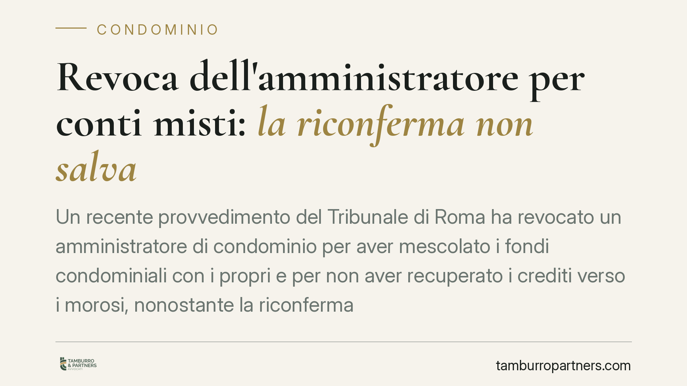
Revoca dell'amministratore per conti misti: la riconferma non salva
Un recente provvedimento del Tribunale di Roma ha revocato un amministratore di condominio per aver mescolato i fondi condominiali con i propri e per non aver recuperato i crediti …
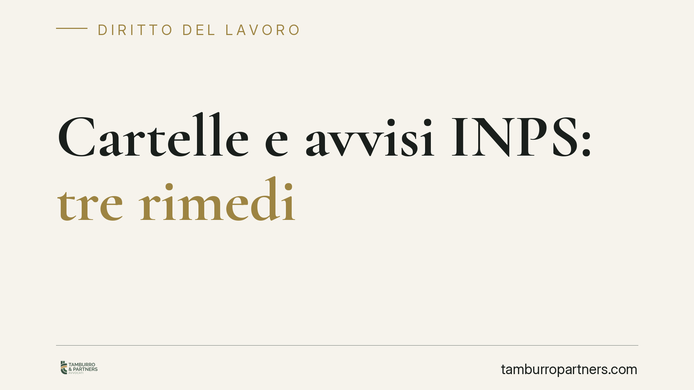
Cartelle e avvisi di addebito INPS: tre rimedi per contestare la riscossione
Un avviso di addebito o una cartella INPS possono aprire la strada al pignoramento. L'ordinamento prevede tre rimedi distinti, con presupposti, termini e giudici diversi. Confonder…